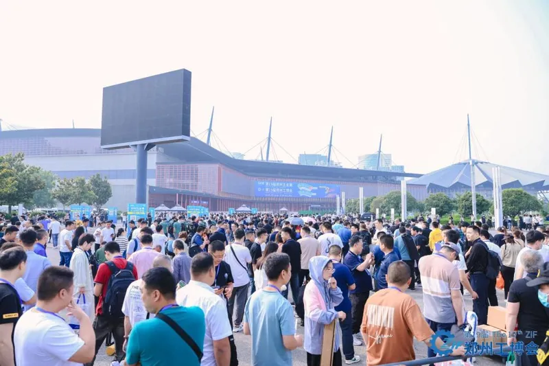
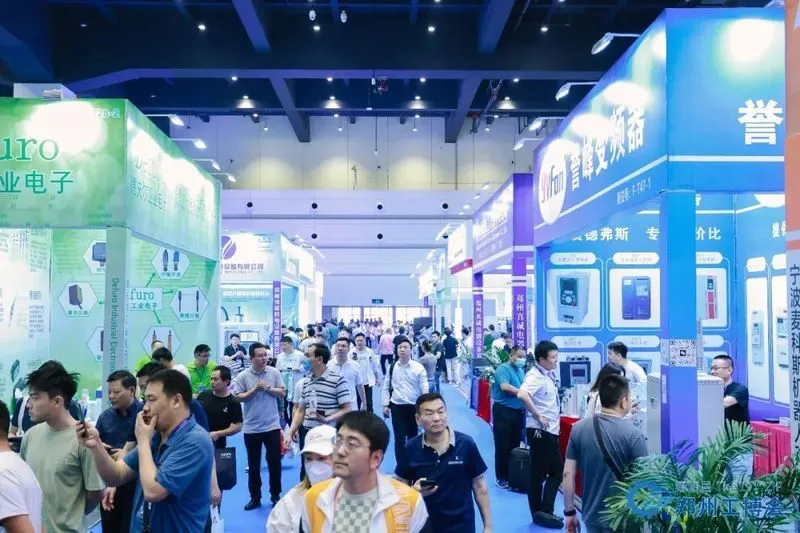
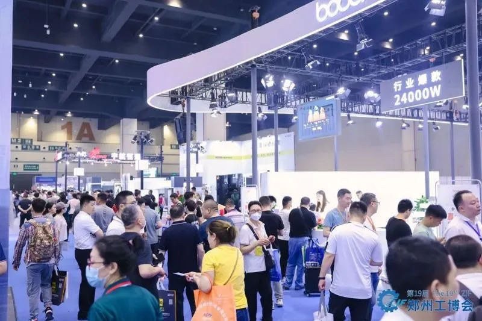
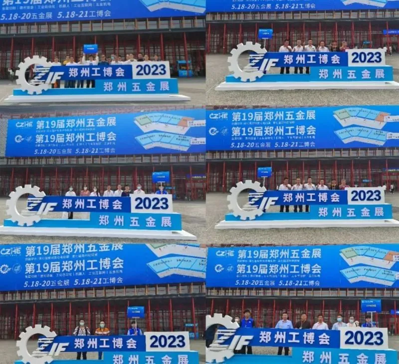
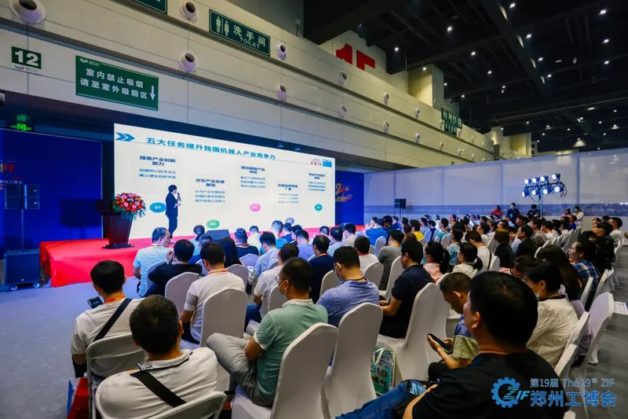
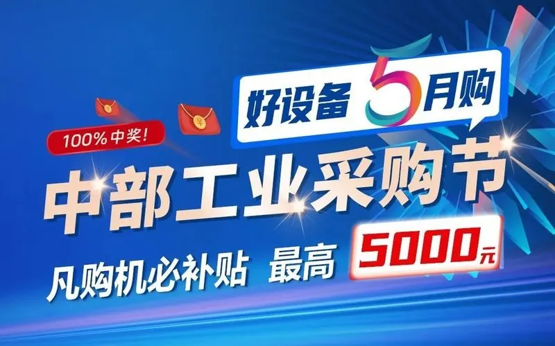
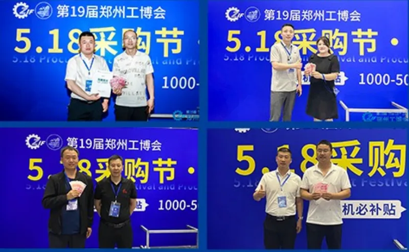
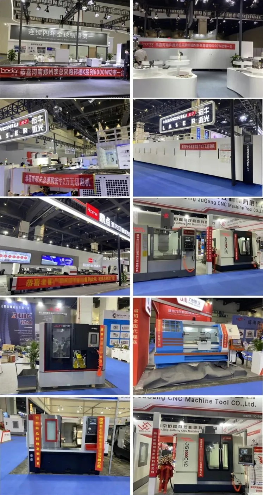

【5月郑州工博会】新能源汽车+钢结构会议+采购节等活动，全面提升5月郑州工博会成效！
首页 / 【5月郑州工博会】新能源汽车+钢结构会议+采购节等活动，全面提升5月郑州工博会成效！在全球能源转型升级，“碳中和”大背景下，我国新能源汽车产业引领全球发展，2023年新能源汽车产销超过900万辆，连续9年位居全球第一；同时光伏行业逐步爆发，钢结构市场空间持续增长；新的机遇带来新的增长点，同时也推动
着行业的技术创新和发展。2024郑州工博会吸引国内外知名企业，瞄准行业的热点领域及市场需求，促进供需对接，推动制造业高质量发展迈出新的步伐。

作为中西部工业品牌大展，第20届郑州工博会将于2024年5月7-10日盛大举办，将从展会内容、观众升级、配套活动等各维度展开全面升级，当前筹备工作高效推进，成果显著，将以12大展馆、7万平方米的总规模，7万专业观众、20余场会议论坛、1场中部工业采购节等内容恢弘呈现，相信届时必将为行业呈现一场更具品质、更多看点、更具成效的展会盛宴。

2024郑州工博会设立机床展、激光钣金展、工业自动化展、机器人展、工业互联网展、五金机电展、物流展等主题展区，集结国内外一线品牌展商，深度服务中西部制造业市场汽车整车及零部件、新能源、农业机械、国防军工、3C电子、食品加工、医疗器械、工程机械、钢结构等产业链发展需求，以全产业链的布局促进上下游交流、合作、交易。

网罗优质买家资源
增加观众体量·扩大辐射圈·提升匹配度
达成交易是我们唯一的追求，郑州工博会将成效作为展会首要任务，成效的背后是观众的范围、体量和精准度，2024郑州工博会洞悉市场变化，立足展商需求。
一是在区域范围上，除了做深做实河南省内观众，
近两年来对山东、山西、江苏、河北、陕西、安徽等省市加大力度宣传，全网数字化推广，挖掘优质买家；并对300多个工业园区、产业集中地、市场等进行实地走访及广告投放，与参展企业市场覆盖精准匹配。
二是在观众体量上，启用振威集团资源100万数据库，专业呼叫团队进行过滤联
三是在精准匹配上，加大资源整合充分吸引相关高端精准资源，与50余行业协会资源常年保持联系，河南省电工行业协会、河南省汽车行业协会、洛阳市机械制造业协会、河南省农业机械工业协会、郑州市医疗器械协会、荥阳市建筑机械协会、河南省粮食行业协会、漯河市食品工业协会、河南省钢结构协会等，并参与协会活动，众多协会也将作为展会支持单位，共同参与展会的观众组织。

多元精彩会议活动
链接资源·把握先机·精准对接
2024郑州工博会进一步加大力度，聚焦下游应用的热点话题与需求变化，立足行业破局、技术创新、产业驱动、行业引领、供需对接等方面着手，打造具有郑州工博会特色的高品质持续性的论坛及会议。展会同期举办2024数字化与智能工厂技术应用论坛、2024新能源汽车大会、2024新能源电池储能智造技术大会、2024钢结构产业数智化技术高峰论坛等会议活动，精准定位展商需求，整合优质资源，深入畅谈应用行业的发展趋势与技术前瞻，精准对接合作，引领产业发展。


据2023年展会现场采购节统计，仅龙雕激光就成交金额在280万以上，众多企业均有成交，展会的落地成效得到了全行业的高度赞扬和一致认可。2024郑州工博会将继续举办中部工业采购节及采购对接会，搭建“一对多，多对一”的高效供需匹配平台，提供凡购机享最高可达5000元的现金红包，众多品牌展商也将携多款爆款机型最新产品，各种打折、满减、返利等多重钜惠活动，为采购商提供丰富的采购和一站式对接场景！



站在新的历史起点上，开启展会实效升级，为行业发展持续赋能，2024年5月7-10日，第20届郑州工博会全新呈现，期待与全行业共享！
锁定黄金五月，抢占中部市场！